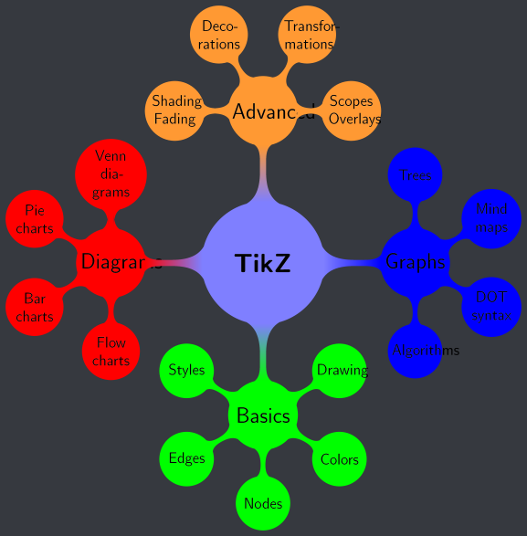

Philosophy Of Best Formats For Media
Table of Contents
Note: I haven’t finished writing this file yet.
On my philosophy reading list, I still need to read Chapters 16, 17, 18, and 19 of Teaching by Principles. Once I finish reading those chapters, it will give me more knowledge and greater insight into improving this web page.
1. Differences And Advantages To Various Formats
Would it be possible to create a format / medium that enables people to reap both the benefits of watching a movie and reading a book at the same time?
- Movies and visual mediums have the advantage of being visual for showing what’s going on and what everything looks like.
- They also feature music that sets the tone for many different scenes.
- They have shorter lengths of time.
- Their greatest disadvantage is that they take more time to produce.
- Reading and textual mediums have the advantage of showing what the characters are thinking about.
- They are often times better for explaining some types of information, especially really dense ones that wouldn’t fit into a fast-paced visual format.
- Books are often better than movies since they focus on telling a story instead of portraying visual effects. There are so many expensive movies that had terrible, boring plots.
- The reader is free to imagine what everything looks like, which could potentially be more entertaining.
- The reader could choose their own music to listen to for setting the tone. However, the quality would depend on their ability to select the right music for the appropriate scenes.
Other Differences
- Books are also available in audio formats, which can give them an advantage over movies which are strictly visual.
- There are few bad books out there out of the best ones to read.
- Books tend to use more complicated language that would require dictionaries to understand.
- They are much cheaper to produce and purchase.
Said format could feature music playing to set the tone at all times.
- It could be mainly visual, but display what the characters are thinking for short snippets.
- This might be very hard to do since it might feel weird to switch back and forth.
- Personally, I don’t think 3D movies are worth the price (neurodivergence should be taken into account). Sometimes they cause motion sickness, the glasses don’t fit well, they cost more, and I generally don’t notice any difference between them and the 2D versions. In the end, I only memorize the plot and the action, not the 3D visual effects which I don’t remember at all after just a few days.
The best academic works are the ones that teach the greatest amount of information in the shortest length.
Maybe one of the reasons why there are so many different formats for learning something (textbooks, webpages, lectures, interactive activities, learn by doing) even though some ways are probably better than others on average is because human comprehension is so low. Since human comprehension after learning something is low in general, it is hard to measure which learning methods work and which ones don’t.
Although repeating ideas in a written work is often viewed as a bad thing, sometimes it’s necessary in order to firmly get the point across. This is the case for the groundedlibertarian.com and Larken Rose’s The Most Dangerous Superstition (for the point and ideas the author is trying to convey, even though it is extremely flawed). The average human has a low comprehension rate around ~60%, so another reason why it might be necessary to repeat ideas is so that they don’t forget them.
Sign language and oral/written language is analogous to analog and digital. Even though digital technology has more advantages than analog technology, this doesn’t mean that analog doesn’t have any advantages over digital.
Although being able to type faster is definitely useful, it often doesn’t make programming, writing musings, etc. faster. Law: If amount-to-be-typed > typing-speed, then faster typing speed is beneficial
Audio presentations and podcasts are linear (one-way) audio streams organized in a coherent structure designed for human comprehension. Hearing is only well-equipped to intake sequential input, whereas vision is far far more capable of skipping around.
Reference To Previous Things In Different Fields Of Knowledge:
- In programming, we typically create and call methods repeatedly to execute a group of instructions multiply times.
- In mathematics, we prove theorems and refer to them later in other proofs and calculations so that we don’t have to prove the same concepts over and over again. The theorem proofs also reveal interesting facts about the universe.
- In logic, we prove propositions (which become theorems) and use them to deduce additional conclusions.
- In languages, we have pronouns that can refer to antecedents so that we don’t have to the say antecedents over and over again.

2. Written Debates Are Superior To In-Person Debates (IMO)
The nature of debates is that they are used to settle disagreements on topics. In most debates, the goal is not to convince the other debater. People usually debate to convince the audience.
- Part of the nature of winning a debate is that it relies on being able to give the right arguments on the fly at the perfect time.
- Sometimes one side will have the better position, but they are able to defend it well since they don’t have the right facts at the right time.
- Most stand-up debates usually feature political discussions, and they have no value because a lot of it is just pandering to different groups of people, the debaters tend to be of average intelligence, and the debaters of ignorant of evolutionary theory, human nature, economics, etc.
- The only other field that would have any topics worth debating about is the greater field of philosophy, but most issues in philosophy would be resolved by reason and science.
- Furthermore, in debates there often aren’t any sources to check facts, and if there are sources provided, there are usually no resources to check the validity of the sources.
- Stand-up debates are never done in academia (excluding “science”), which hints at the futility of debates.
- Academia settles disagreements through research, reason, and documents, papers, and other media featuring research and reason.
- Written mediums are the best way to debate. There is enough time for both sides to gather the research, reason, facts, and evidence to support their positions.
- The important thing is to know how to argue and reason well. This skill is better than any other debating techniques.
- Opposing sides cannot interrupt each other, which is a bonus.
- Since written mediums they are not in-person, they also get less personal, which is good for avoiding personal conflicts
- Issues external to the debate topics such as speaker appearance, perceived confidence, intonation, and body language can interfere with the validity of the speakers’ positions.
- In written mediums, these external factors are not present, so the content can be judged as it is by itself.
- The only external factor present in written mediums is how well the content is written, but given as much time as one needs, this can be perfected to eliminate the bias.
- However, the need for spoken debates will inevitably arise when people converse, so even though spoken debates are an inferior debating format, they still hold importance in being inevitable and essential for trying to convince someone in the spur of the moment.
- Thus, it is still important to have at least some experience with a spoken debate as a tool of persuasion and social skills.
- A characteristic feature of cults is that they quote their authority-figures / leaders instead of explaining their beliefs when it gets difficult. It’s the same thing that sends people away from religion. Why explain your beliefs when you could just quote the bible?
3. Disadvantages Of GUI’s
- You have to figure out what all the buttons do (if its not immediately obvious)
- You have to memorize where all the buttons are
- You often have to click several times to get to the buttons
- It is less flexible in its options
- It requires more system resources
Maybe the best formats would use color codes to indicate how the reader should read the following text (e.g. read it like a paragraph, read it carefully, just skim the list and think about it a little, don’t forget this, main point, etc)
- “there is a list of what the next following sections will be”
- “there is a list of what the next following sections will be, and each of those subsections will contain their own subsections too (sub-subsections)”
4. Diataxis and Pedagogy
The Diátaxis framework aims to solve the problem of structure in technical documentation. It adopts a systematic approach to understanding the needs of documentation users in their cycle of interaction with a product.
Diátaxis identifies four modes of documentation - tutorials, how-to guides, technical reference and explanation. It derives its structure from the relationship between them.
In Diátaxis, each of these modes (or types) answers to a different user need, fulfils a different purpose and requires a different approach to its creation.
i
5. Examples Of Influential, In-Depth Works That Are Hundreds Or Thousands Of Pages Long That Few People Read From Start To Finish
- Immanuel Kant’s Critique of Pure Reason
- Immanuel Kant’s Critique of Practical Reason
- Adam Smith’s the Wealth of Nations
- Karl Marx and Friedrich Engel’s Das Kapital
- Ted Kaczynski’s Anti-Tech Revolution
- Robert Caro’s The Power Broker (1974), a biography of New York urban planner Robert Moses
- Robert Caro’s The Years of Lyndon Johnson, five volumes (1982, 1990, 2002, 2012, 202x)
For all of these works and many more, the synposes, summaries, and outlines that people have given about them have been spread to more people than the actual works themselves. It follows that anybody who wishes to write works of similar lengths should be very conscious about how the synopses would be interpreted by people. Furthermore, the authors of these works have all written about minor topics inside these books that were not the main topic of discussion, and consequently, these minor topics have been omitted from the books’ summaries, even though they were really important ideas (e.g. Smith’s support for Land Value Tax based on ground rent, i, i)
Generally speaking, most people also won’t read texts, especially really long ones, if they don’t deem those texts to be worth reading in the first place. Aside from better understanding what the authors of those texts believed in, there’s nothing to gain from reading them, and even then, fully understanding what person X believes is hardly worth it if most of their ideas are wrong to begin with, because there are infinitely many more ways to be wrong than there are to be correct. Some examples:
- There is very little reason for anybody to read Karl Marx’s Das Kapital because most of it has been rejected by mainstream economists and the Labor Theory of Value can be easily disproven and rejected in favor of Marginalism instead, which does correctly describe how prices work.
- Although Immanuel Kant’s analytic-synthetic distinction is novel, original, and an interesting idea to think about, it’s not worth reading hundreds and hundreds of pages that elaborate on this idea with further conclusions because several premises that are encapsulated in the conceptual distinction are incorrect. However, there might/probably still be some more ideas worth thinking about in Kant’s magnum opus, like his theory of characteristics (quantity, quality, etc) as shown in some outlines of his work.
- Immanuel Kant’s Critique of Practical Reason is not worth reading because it assumes that morality is objective, when morality is actually subjective.
So people will only spend dozens of hours reading a lengthy, extensive work if they already believe that it would be worth reading in the first place. Usually they will already agree with the claims and assertions presented within the texts’ summaries, in which case they would only be reading the books in order to better understand the specific ideas, arguments, and details.
5.1. Thinking About Summaries (Smaller Models Of Knowledge) Are Often More Important That Larger Ones
If someone spends literally decades of their life writing a Caro-esque biography or other work about somebody or something, the summarization of the work would definitely reach more minds than the actual several-thousands-pages-long work itself, because almost no one has enough time to read such a thing unless they were deeply interested in it or otherwise thought that they would get a lot of enjoyment/wisdom/understanding/etc out of it.
5.2. Some Works Are Too Rigorous For Most People To Comprehend
As an example, most of the people who have attempted to read The Art of Computer Programming by Donald Knuth report that they usually have to spend about 1-2 hours just to read 1-2 pages out of the entire volume of books which is approximately a thousand pages per book.
Of course, while Donald Knuth has spent literally years writing this volume, as well as years and decades of his life thinking about computer science and programming, his brain has been wired to deal with such complex mathematical rigor as it relates to algorithms, data structures, and solving computer science problems in general.
On the other hand, say a CS grad/undergrad student who hopes to learn more deeply about computer science will not have their brain wired as deeply as the author who wrote the books to think about these kinds of problems. Hence, because the author is so advanced and esoteric in his thinking, what he writes is not easily understandable to a less experienced audience. Hence, other books and volumes written by different authors that are easier to understand thus become more popular and more widely read by people interested in these subjects.
i
i